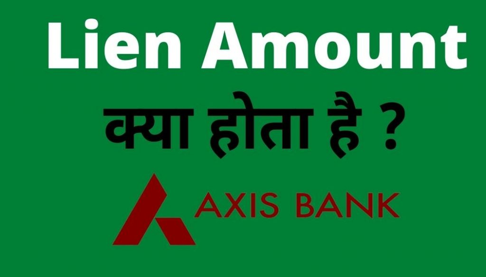

Lien Amount Kya Hai? (Lien amount meaning In Hindi):-दोस्तों आज मैं आपको बताने वाला हूं कि Lien Amount क्या होता है,Lien Amount को कैसे हटाया जाता है ,Banks किन कारण से लीन अमाउंट रखती है और lien Amount से कैसे बचा जय इसकी चर्च भी हम करने वाले हैं तो आइए Lien Amount के बारे में विस्तार से जानते हैं।
Lien Amount क्या है? (What is Lien Amount in Hindi)
दोस्तो सबसे पहले आइए जानते हैं Lien Amount होता क्या है? दोस्तों कई बार आपने देखा होगा कि आपके खाते में बैलेंस रहने के वावजूद भी आप उस बैलेंस को निकाल नहीं पाते हैं,और जब आप अपना बैलेंस चेक करेंगे तो आपका बैलेंस भी दिखता है , लेकिन आपके बैलेंस के नीचे लिन अमाउंट जैसा कुछ आपको दिखाई देता है, इस Amount को हम Lien या Hold Amount कहते हैं,आपके जितने भी Balance Lien Amount में दिखाई देते हैं उतने पैसे आपके खाते में बैंक के द्वारा होल्ड कर दिया जाता है।
Lien Amount के क्या कारण है ?
सीधे शब्दों में समझें तो lien Amount का मतलब है कर्ज चुकाने वाली राशि या देय राशि जो आपको आने वाले समय में अपने खाते से Payment करना है। Bank निम्नलिखित कारण से Lien Amount रखती है।
#1. Loan का EMI नहीं देने पर:-अगर किसी वक़्ति ने बैंक से लोन ले रखा है और उसने समय पर EMI पेमेंट नहीं किया है,या उनके खाते से किसी कारण वास EMI Amount नहीं कट पाया है तो उस वक़्ति के बैंक खाते में EMI के बराबर Lien Amount बैंक रख सकता है।
#2. Monthly प्लान :-किसी भी तरह का कोई Monthly Plan अगर आप ने ले रखा है जिसका पैसा आपके खाते से हर महीने काटा जाता है तो उसके लिए भी आपके खाते में लीन अमाउंट दिखाई दे सकता है।
#3. न्यानिक आदेश :- अगर किसी वक़्ति पर कोई मुक़दमा चल रहा हो और वह मुक़दमा अगर बैंकिंग से संबंधित हो तो कोर्ट के आदेश पर बैंक उस वक़्ति के खाते में Lien Amount या होल्ड Amount रख सकता है।
#4. Credit Card का bill Pending रहने पर :- यदि आपके खाते से कोई क्रेडिट कार्ड लिंक है जिसके बिल का भुगतान आपके खाते से स्वतः हो जाता है,लेकिन किसी कारण वस अगर क्रेडिट कार्ड के बिल का भुगतान नहीं हो पता है तो बैंक आपके खाते में बिल के बराबर की राशी को होल्ड कर देगा या Lien amount लगा देगा।
ये भी पढ़े :-
- Axis Bank Consolidated Charge क्या है?
- Bank से Loan लेने के लिए कैसे बात करें?
- how to avoid consolidated charges in axis bank
- BRKGB Internet Banking,पूरी जानकारी हिंदी में।
- Loan margin money क्या होता है?
Bank Lien Amount क्यों रखती है ?
दोस्तों जैसा कि हमने बताया कि बैंक से अगर आपने कोई लोन ले रखा है और और उसका EMI टाइम पर आप नहीं दे रहे हैं, तो बैंक आपके खाते में उस EMI के बराबर Lien Amont रख देती है, इससे होता क्या है कि Future में जब भी आपके खाते में पैसे आएंगे, तो लीन अमाउंट में चला जाएगा और आप उसे निकाल नहीं पाएंगे, आपका वह पैसा आपके खाते में ही Hold रहेगा और कुछ दिनों के बाद बैंक अपना EMI इस पैसे को काट कर पूरा कर लेगी।
उदाहरण के लिए :- अगर आपके बैंक खाते से प्रतीक महीने के पहली तारीख़ को रू 5000 का EMI स्वतः कटता है,और किसी कारण वास आपके खाते में पहली तारीख़ को मात्र रू 1000 ही हैं,तो आपका EMI उस दिन नहीं काट पाएगा और बैंक आपके कहते में रू 5000 का Lien Amount mark कर देगा।
अब फिर आपने कुछ दिनों के बाद मान लेते हैं कि रू 8000 अपने खाते में डाले तो अब आपका कुल बैलेंस रू 9000 हो जाएगा,चुकी आपके खाते में Lien Balance दिखाई दे रहा है इसीलिए आप सिर्फ ₹4000 ही निकाल पाएंगे बाकी के ₹5000 बैंक में होल्ड रहेंगे। और कुछ दिनों के बाद फिर बैंक आपका EMI का पैसा काटने का जब कोशिश करेगी तो वह पैसा ₹5000 कट जाएगा और साथ साथ Lien Amount भी हट जाएगा।
{kind=link}

Lien Amount कैसे चेक करें?(How to Check Lien Amount)
Lien Amount चेक करने के लिए आप नीचे दिए गए कोई भी एक Step को follow कर सकते हैं।
- Internet Banking में लॉगिन करके आप My Account section में जाकर जब अपना balance चेक करेंगे तो,अगर आपके खाते में lien Balance रहेगा तो यहाँ आपको दिखेगा।
- आप अपने नागदिकी ब्रांच जाकर या अपने Passbook में Statement update करवाकर भी अपने Lien balance को चेक कर सकते हैं।
What is the lien amount in axis bank?
अगर आपका खता Axis बैंक में है और आपके उस खाते में किसी तरह का लोन चल रहा है ,या किसी भी तरह का मंथली कटौती आपके खाते से अपने आप होती है तथा किसी कारण वस आपके खाते में अगर बैलेंस कम होता है.
जिसके कारण अगर आपका पैसा नहीं काटना है तो आपके खाते में Axis Bank Lien अमाउंट लगा देगा .
Example के लिए अगर आपके खाते से हर महीने तीन हज़ार रूपए की राशी की कटौती हर महीने के दस तारीख को होती है ,और किसी महीने अगर पैसे कटते समय तीन हज़ार रूपए आपका बैलेंस नहीं रही तो पैसा नहीं कटेगा और आपके खाते में तीन हज़ार रूपए Lien बैलेंस दिखाई देंगे .
आप उस तीन हज़ार को निकल भी नहीं सकते है।
Axis Bank का Lien Amount कैसे चेक करेंगे ? (how to check lien amount in axis bank)
- सबसे पहले आपको अपने एक्सिस बैंक के खाते में मोबाइल बैंकिंग या इन्टरनेट बैंकिंग के माध्यम से अपने यूजर ID और Password की मदद से Login हो लेना है .
- उसके बात अपने Account डैशबोर्ड में जाकर अपने बैलेंस चेक करना है .
- यहाँ पर आपको अपने axis bank खाते के सभी बैलेंस दिखाई देंगे .
- आपको यह पर Lien Balance ,Clear Balance ,Total Balance सभी दिखाई देंगे .
Axis Bank में Lien Amount कैसे हटाए ? (how to remove lien amount in axis bank)
- Axis Bank में Lien Amount हटाने के लिए आपको सबसे पहले अपन कहते में लॉग इन करके Axis Bank में Lien Amount कितना है ये पता करना है .
- उसके बाद आपको अपने खाते में Lien बैलेंस से ज्यादा बैलेंस रखना है .
- कुछ समय के बाद आपके खाते से जो कटौती नहीं हुई थी वो कट लिया जायेगा .
- उसके बाद आपका lien Amount अपने आप ही हटा दिया जायेगा .
Lien Marking for NACH Return Charges Bank of Baroda in hindi
Bank of Baroda के खाते से अगर आपके किसी लोन का EMI automatically NACH system से कटता है और अगर किसी कारण से जैसे खाते में पैसे नहीं होने के कारण EMI का भुगतान समय से नहीं हो पता है इसके कारण Bank of Baroda आपके खाते में उस EMI के बराबर के रक़म का Lien Mark कर देता है।और EMI अमाउंट के अलावे NACH Return charges भी आपके खाते से काटे जाते हैं।
How to unlock lien amount in sbi
SBI में lien Amount अनलॉक करने के लिए SBI खाते से Related सभी तरह के बकाया,ऋण या EMI को चुकता करना होगा तभी जाकर स्टेट बैंक ऑफ़ इंडिया आपके खाते से Lien को अनलॉक करेगा।
बैंक Lien Amount क्यों रखता है ?
बैंक Lien Amount इसीलिए रखता है कि अगर आपके खाते में किसी भी समय जमा होता है तो आप उस पैसे को फिर निकाल लेंगे अगर आपके खाते में lien amount लगा रहेगा तो आप उतने पासे नहीं निकल पाएंगे और बैंक समय आपने पर पैसे की कटौती कर लेगी।
Lien Amount से संबधित अधिक जानकारी के लिये आप RBI के वेबसाइट को भी Visit कर सकते हैं :- Reserve Bank of India
Frequently Asked Questions (FAQ):-
-
Lien Amount रहने से क्या नुकसान है?
Lien Amount भी एक प्रकार का कर्ज है इससे आपका CIBIL Score भी खराब हो सकता है।
-
Lien Balance से कैसे बचे?
आपके खाते में किसी भी प्रकार का बिल बकाया है तो आप उतने पैसे पहले से अपने खाते में जमा कर दे।
-
क्या SBI से लीन Balance निकाल सकते हैं?
नहीं SBI (State Bank of India) ही नहीं किसी भी बैंक से आप lien बैलेन्स निकाल नहीं सकते हैं,यह एक प्रकार का कर्ज है।
-
बैंक खाते में Lien या होल्ड हटने में कितना समय लग सकता है?
अधिकतर Lien या होल्ड पाँच दिनों में हट जाती है, लेकिन यह पूरी तरह से बैंक के ऊपर है की खाते से कब होल्ड हटाते हैं, जिस कारण से होल्ड लगाया है वो कारण भी समाप्त होने तक होल्ड रह सकता है।
-
How do you clear a lien amount?
अगर आपके पास बैंक से लिए गए किसी भी ऋण का भुगतान बाकी है, तो उसे समय पर चुकता करें।
-
how to remove lien amount in bob
BOB खाते के बकाया राशी चुकता करें।
-
Is lien amount refundable
Yes,This Amount is Only Hold by bank it will retrun after Unlocking the Lien.
Conclusion (निष्कर्ष ):-
दोस्तों आज आपने जाना की Lien Amount क्या होता है ,Lien amount कितने तरह के होते हैं। lien amount बैंक क्यों रखते है ? बैंक अगर आपके खाते में lien amount लगा देता है तो आप क्या करेंगे।